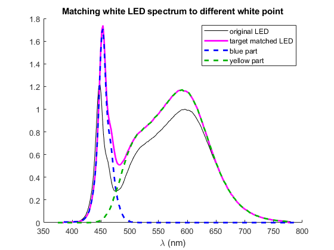
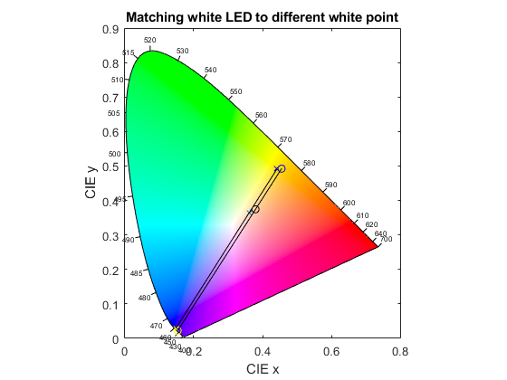

MatchWhiteLEDSpectrum
Navigate to: Home | Alphabetic list | Grouped list | Source code: MatchWhiteLEDSpectrum.m
Given a white LED spectrum, modifies it to match a desired CIE XYZ target (e.g. for LEDs from a different white bin, or at different operating conditions)
Contents
Syntax
rv = MatchWhiteLEDSpectrum(whiteLEDspectrum, XYZ_target)
Input Arguments
- whiteLEDspectrum: A white LED spectrum, with a blue peak and a yellow peak, with a minimum near 480 nm in between
- XYZ_target: A struct with fields x,y,Y, i.e. the desired x-y white point and the Y tristimulus value. % Note that you need to multiply the tristimulus Y value with Km = 683 lm/W to get photometric units (lm, cd, lux).
Output Arguments
- rv: A struct with fields spec: A white LED spectrum, i.e. a struct with fields lam and val, which has the desired x-y white point and the desired tristimulus Y value, blue, the shifted blue part of the spectrum, yellow, the shifted yellow part of the spectrum, and target, a copy of the XYZ_target input parameter.
Algorithm
- Determines the location of the minimum near 480 nm.
- Splits the input spectrum smoothly, using a tanh weighting function with a width of 10 nm, into a blue part and a yellow part, which overlap around the white spectrum's minimum.
- The desired white point will generally not lie on the line in the CIRE xy diagram which connects the color coordinates of the blue and the yellow part. If the desired white point is above/below this line, the blue part is shifted towards longer/shorter wavelenghts and the yellow part by the same shift towards shorter/longer wavelengths, such that the desired white point lies on the line connecting the shifted blue and yellow spectra.
- The shifted blue and yellow spectra are scaled to match the desired whited point and the desired tristimulus Y value.
When it would be necessary to shift the blue/yellow parts by more than 10 nm, the routine emits an error.
In practice, the actual white spectrum of a LED of the same type, but from a different white bin, will not exactly be what this function returns. However, it would be wrong to shift only the blue part, or only the yellow part. Binning variations are caused by varying phosphor amounts (which do not require shifting, just rebalancing blue and yellow), by variations/shifts in the underlying blue LED spectrum, and by variations of the phosphor spectrum. Similar considerations apply to flux and white point variations due to current/temperature changes. This routine uses a heuristic approach to modify the original white spectrum in a reasonable way, such that a given color and flux shift is achieved.
With this routine, it is possible to implement a white LED model, which returns the actual spectrum under operating conditions for a white LED, given only data sheet information.
See also
CIE1931_XYZ, ResampleSpectrum, ShiftToLdom
Usage Example
function ExampleMatchWhiteLEDSpectrum() % source LED spectrum at 4003 K spec = ReadLightToolsSpectrumFile('LED_4003K.sre'); spec.XYZ = CIE1931_XYZ(spec); matchOriginal = MatchWhiteLEDSpectrum(spec, spec.XYZ); delta = matchOriginal.spec.val - spec.val; test = max(abs(delta)) < 1e-14; fprintf('match original deviation : %g\n',max(abs(delta))); % prepare target at 4500K Planck xyt = PlanckLocus().xy_func(4500); xt = xyt(1); yt = xyt(2); Yt = spec.XYZ.Y * 1.2; % a little more flux XYZ_target = XYZ_from_xyY(xt, yt, Yt); match4500 = MatchWhiteLEDSpectrum(spec, XYZ_target); %% figure(); clf; hold on; plot(spec.lam, spec.val,'k'); plot(match4500.spec.lam, match4500.spec.val, ' m','LineWidth',2); plot(match4500.blue.lam, match4500.blue.val, '--b','LineWidth',2); plot(match4500.yellow.lam, match4500.yellow.val, '--','Color', [0, 0.7, 0],'LineWidth',2); xlabel('\lambda (nm)'); legend({'original LED','target matched LED','blue part','yellow part'}); title('Matching white LED spectrum to different white point'); fh = figure(); clf; PlotCIExyBorder('Figure',fh,'ColorFill', true); axis equal; axis([0 0.8 0 0.9]); hold on; scatter(spec.XYZ.x, spec.XYZ.y,'k'); scatter(xt, yt,'x'); scatter(matchOriginal.blue.XYZ.x, matchOriginal.blue.XYZ.y,'y'); scatter(match4500.blue.XYZ.x, match4500.blue.XYZ.y,'xy'); scatter(matchOriginal.yellow.XYZ.x, matchOriginal.yellow.XYZ.y,'b'); scatter(match4500.yellow.XYZ.x, match4500.yellow.XYZ.y,'xb'); plot([matchOriginal.blue.XYZ.x, matchOriginal.yellow.XYZ.x],[matchOriginal.blue.XYZ.y, matchOriginal.yellow.XYZ.y],'k'); plot([match4500.blue.XYZ.x, match4500.yellow.XYZ.x],[match4500.blue.XYZ.y, match4500.yellow.XYZ.y],'k'); xlabel('CIE x'); ylabel('CIE y'); title('Matching white LED to different white point'); end
match original deviation : 8.88178e-16 